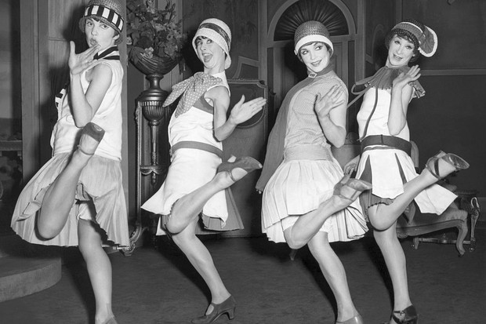
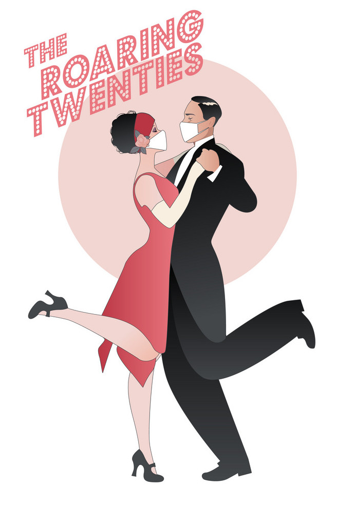

THE ROARING TWENTIES

I sorta like the idea that after the pandemic is over there will be great celebration and increased social freedoms like that of the 1920s.
Ther ehave been lots of articles calling the upcoming decade the New Roaring Twenties and as a young person this is a bit exciting.
I by no means want to go back in time to when women and people of color had little to no rights but enjoy having hope for a future filled with
wild and fun times around other people.
